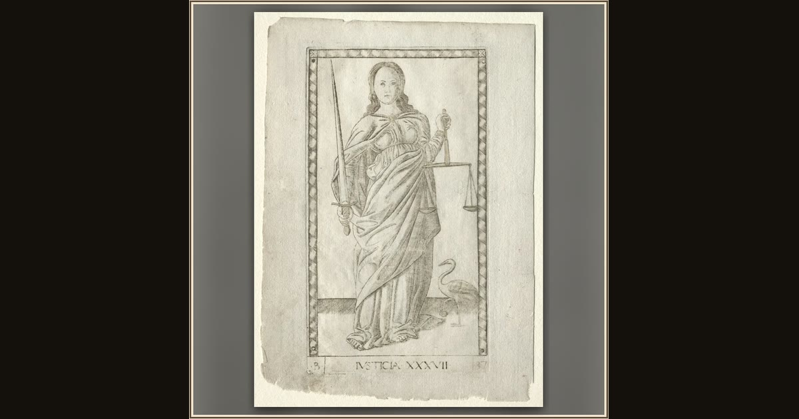

Justice (from the Tarocchi, series B: Cosmic Principles & Virtues, #37)
Master of the E-Series Tarocchi (Italian, active 1460s) · before 1467 · cma
Justice holds a sword and scales in a Tarocchi engraving; Socrates defines justice here as each person doing the one work suited to their nature (433a). Explore its place in Plato's Republic, Book IV, section 67.